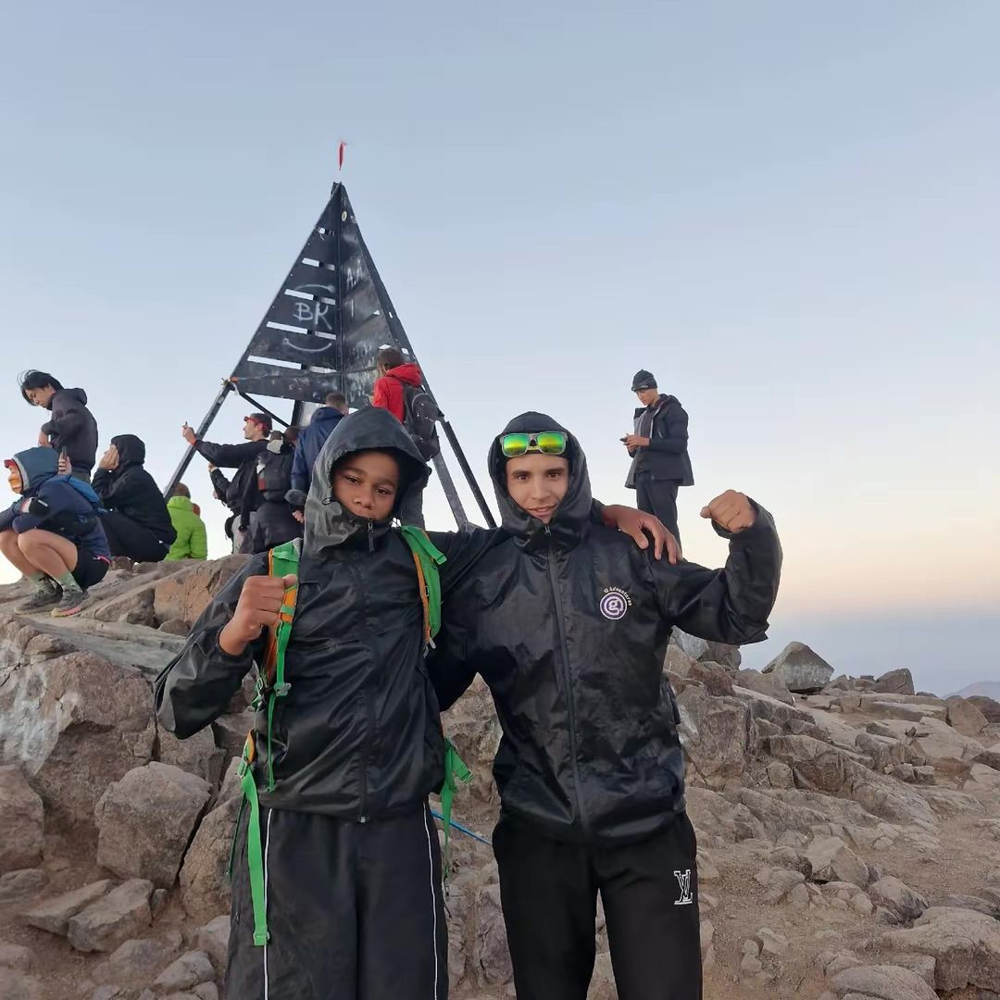
Je m'appelle Dani.
J'ai 16 ans et j'habite dans le Nord vaudois. Je grimpe, je marche, et je filme tout.
- Club Alpin Suissesection d'Yverdon
- Escalade et blocen salle
- Via ferrata, neige, plongéele reste du temps
- Haute montagnetoujours avec un guide diplômé
Toubkal
Le plus haut sommet d'Afrique du Nord. Départ de nuit, lever du soleil au sommet.
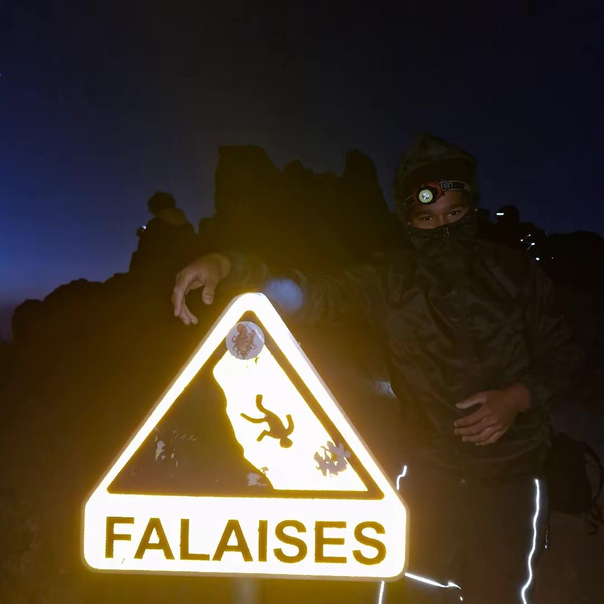
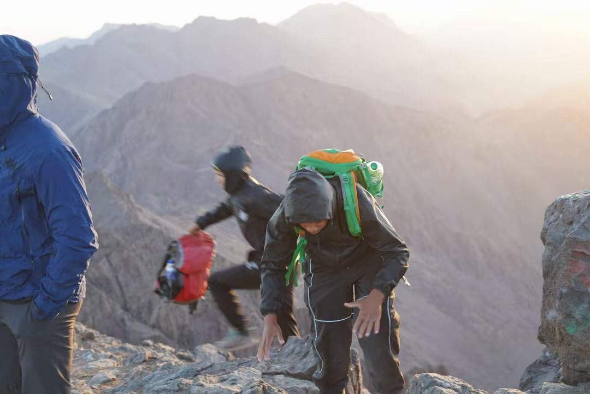
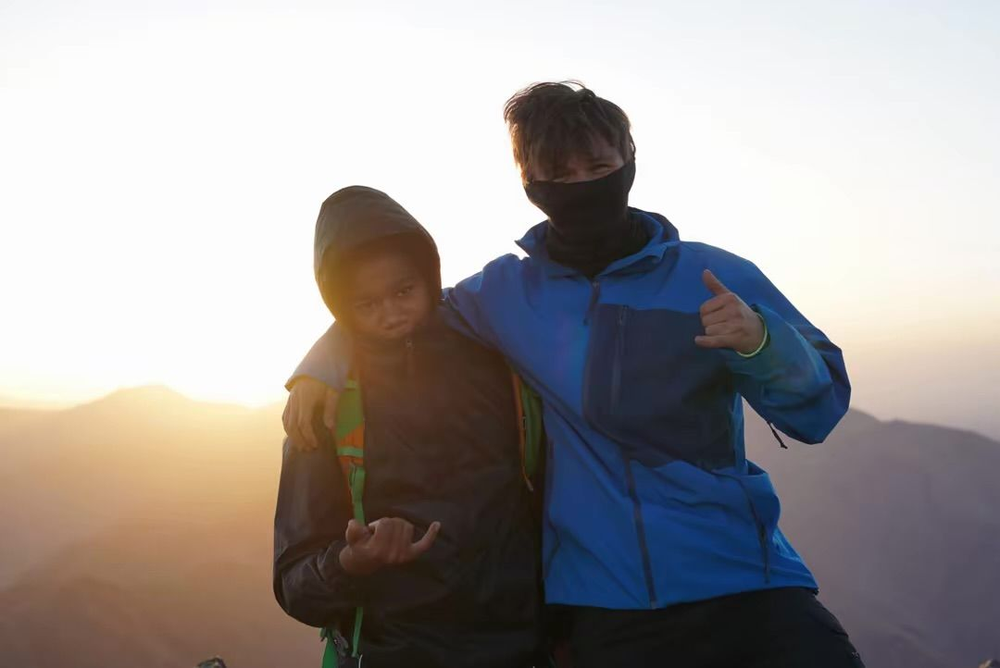
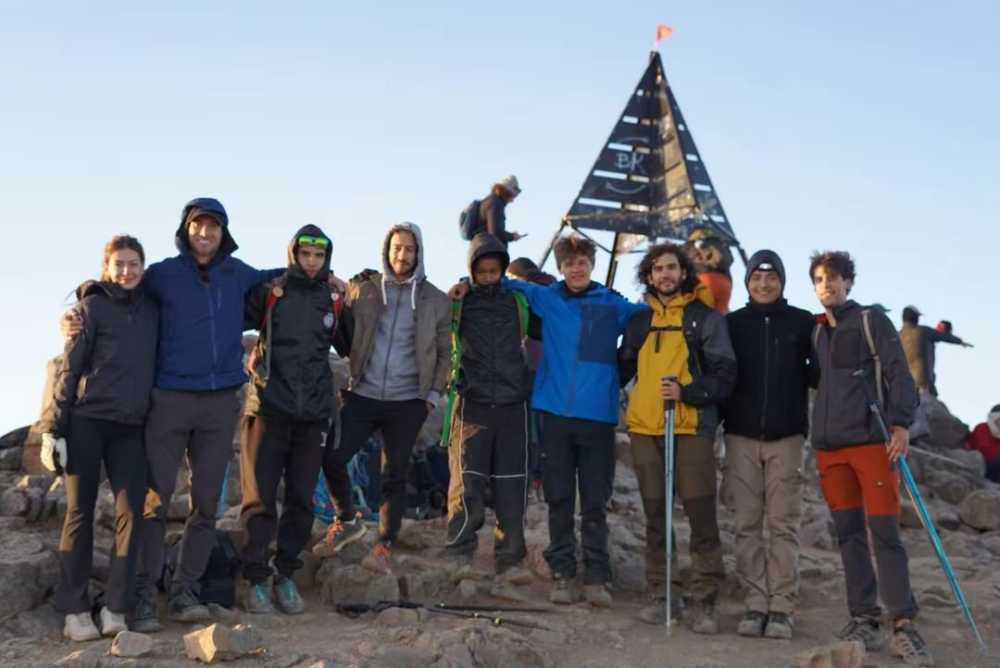
Mont Cameroun
Un volcan, de la forêt tropicale aux coulées de lave. Le toit de l'Afrique de l'Ouest et centrale.
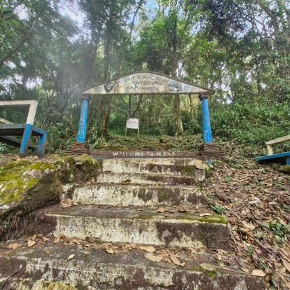
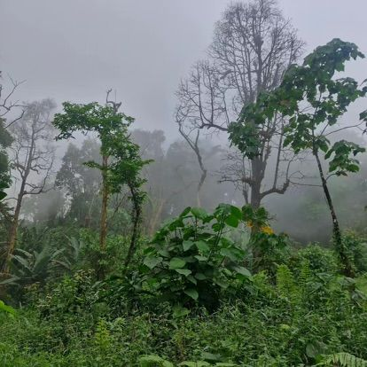
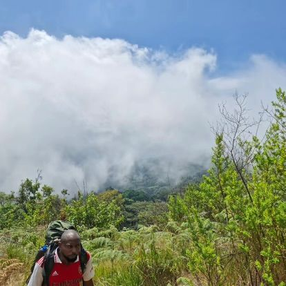
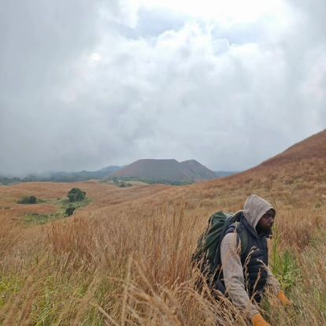
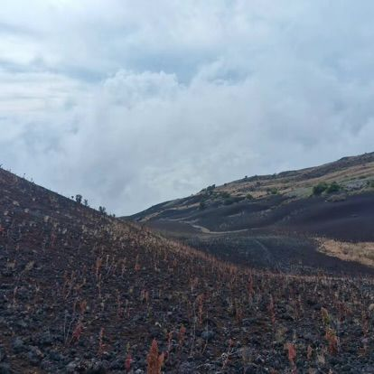
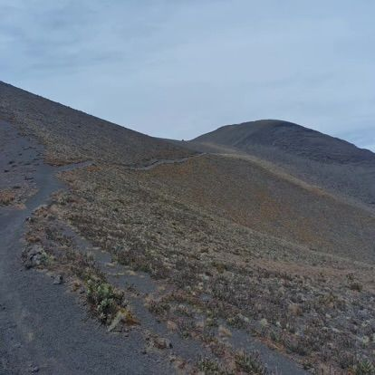
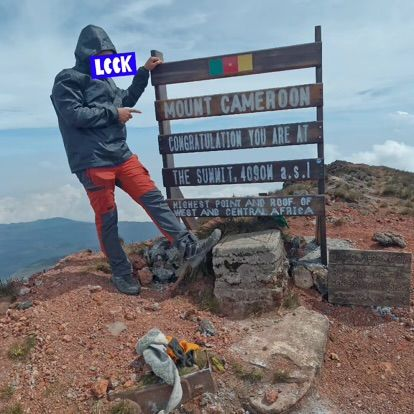
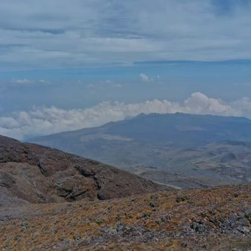
La suite du chemin
14 sommets de plus de 8000 m. Un projet sur plusieurs années, étape par étape.
Cette liste n'est pas exacte : je compte faire d'autres sommets intermédiaires pour évoluer petit à petit.
Je m'entraîne dur, tous les jours.
Le soir après les cours, de 1 à 3 heures. Et souvent, une sortie en montagne.
Une de mes sorties, filmée et publiée sur TikTok.
Carnet de route
Tout est filmé.
Chaque étape du projet est publiée sur TikTok. Le nombre d'abonnés affiché ici est en direct.
TikTok @danimontagne1@danimontagne1
Ce qu'il me manque
- Du matérielVeste, pantalon, doudoune, gants, lunettes de glacier, crampons, piolet, casque, sac.
- Un soutien financierLe guide, les courses de préparation, les refuges, le matériel de tournage.
- Des servicesTests de performance, suivi d'entraînement, conseils.
Ce que je donne en retour
- Votre nom dans mes vidéosMention, remerciement et logo dans la série.
- Votre logo sur moiSur ma veste ou mon sac, et sur la photo au sommet.
- Une vidéo pour vousTest de votre matériel ou présentation de votre entreprise.
- Des images à réutiliserEt une présentation en magasin ou à un événement.
- Un bilan chaque moisCe que votre soutien a permis, et mes chiffres.
Même un petit geste m'aide énormément.